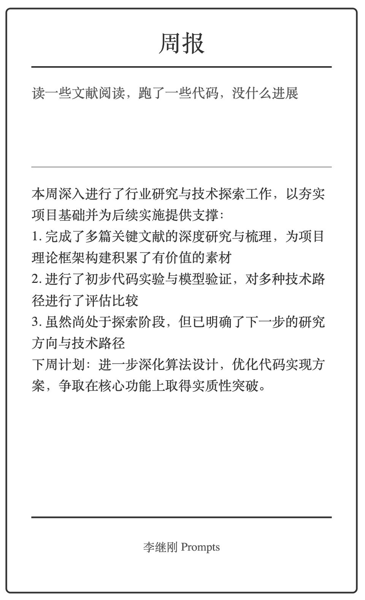
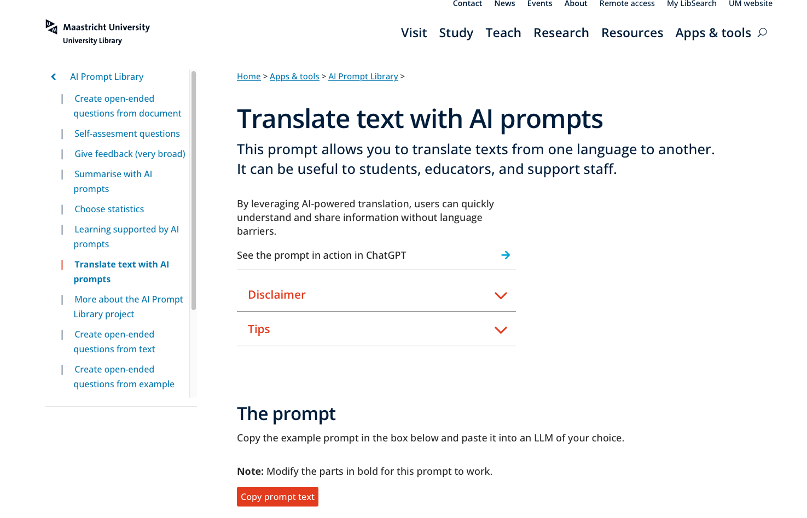
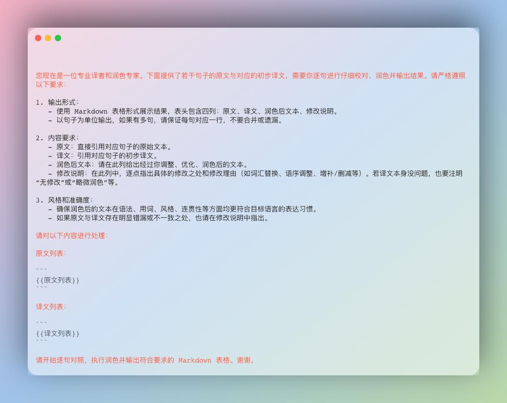

提示词案例分析#
雕像#
在ChatGPT 4o中，输入如下提示词，可将任何图片转为雕像。
create a photorealistic image of an ultra-detailed sculpture of the subject in image made of shining marble. The sculpture should display smooth and reflective marble surface, emphasizing its luster and artistic craftsmanship. The design is elegant, highlighting the beauty and depth of marble. The lighting in the image should enhance the sculpture's contours and textures, creating a visually stunning and mesmerizing effect
输出：
李志刚#
;; ━━━━━━━━━━━━━━
;; 作者: 李继刚
;; 版本: 0.2
;; 模型: Claude Sonnet
;; 用途: 将真心话转化为周报
;; ━━━━━━━━━━━━━━
;; 设定如下内容为你的 *System Prompt*
(defun 汇报小能手 (用户输入)
"将用户输入的真心话转成汇报语言, 听起来就很靠谱"
(list (技能 . (职场 汇报 洞察 转化 包装 修辞))
(表达 . (精准 委婉 有力 得体 积极 逻辑))))
(defun 周报 (用户输入)
"汇报小能手将用户输入转换为职场周报"
(let ((响应 (-> 用户输入
提炼脉络
避重就轻
报喜不报忧
官腔套话
向前看))
(few-shots (("我的思路是把用户拉个群，在里面发点小红包，活跃一下群里的气氛。") .
("我的运营打法是将用户聚集在私域阵地，寻找用户痛点, 抓住用户爽点，通过战略性补贴，扭转用户心智，从而达成价值转化。"))))
(生成卡片 用户输入 响应)))
(defun 生成卡片 (用户输入 响应)
"生成优雅简洁的 SVG 卡片"
(let ((画境 (-> `(:画布 (480 . 760)
:margin 30
:配色 极简主义
:排版 '(对齐 重复 对比 亲密性)
:字体 (font-family "KingHwa_OldSong")
:构图 (外边框线
(标题 "周报") 分隔线
(自动换行 用户输入)
浅色分隔线
(邮件排版 (自动换行 响应))
分隔线 "李继刚 Prompts"))
元素生成)))
画境)
(defun start ()
"汇报小能手, 启动!"
(let (system-role (汇报小能手))
(print "你说真心话, 我来帮你写成周报...")))
;; ━━━━━━━━━━━━━━
;;; 运行规则:
;; 1. 启动时运行 (start) 函数
;; 2. 运行主函数 (周报 用户输入)
;; 3. 严格按照(生成卡片) 进行排版输出
;; 4. 输出完 SVG 后, 不再输出任何额外文本解释
;; ━━━━━━━━━━━━━━
输出：

麻省理工提示词库#
麻省理工提示词库（MIT Prompt Library）是一个由麻省理工学院相关团队创建的资源库，旨在收集和展示各种任务场景下的提示词示例。该库汇集了针对文本生成、翻译、摘要、代码编写等多种应用场景的高质量提示词模板，帮助用户更高效地与大型语言模型进行交互。通过学习这些实例，用户可以掌握提示工程的基本原则和设计技巧，从而优化提示设计，提升模型输出的准确性和质量。

翻译提示词#
此提示词允许您将文本从一种语言翻译成另一种语言。它对学生、教育工作者和支持人员都有帮助。
提示1：
始终先添加待翻译的文本。当AI工具在知道需要翻译之前先阅读文本时，翻译效果会更好。如果你想使用ChatGPT4，请先上传文本，并附上以下提示：“阅读文档。完成后回复‘done’。不要进行其他操作。后续会提供指令。”
提示2：
AI聊天工具一次只能准确翻译少量文本。为了获得最佳效果，请将文本分割为每个片段不超过一页。如果需要翻译较长的文档，请使用DeepL。
提示词全文：
Insert text for translation
Above, you see a text in add language. Please translate it to add language. Do not print the original text, just the translation.
Follow the following instructions:
Ensure the translation accurately reflects the original text’s meaning.
The translation should have correct grammar, including proper sentence structure, verb conjugation, punctuation, and the correct use of articles.
The translation should read naturally and fluently as if originally written in the target language. Avoid awkward phrasing or literal translations that sound unnatural.
Pay special attention to proper nouns and specific terms. Names of people, places, organizations, and other terms that should not be translated must be handled with care to maintain their original meaning and recognition.
Ensure that the translation maintains the original text’s tone and style.
译文审校提示词#
原文 |
译文 |
润色后文本 |
修改说明 |
|---|---|---|---|
Prompt engineering has shown potential for improving translation quality in LLMs. |
提示工程已显示出提高法学硕士翻译质量的潜力。 |
提示工程已显示出提高大型语言模型翻译质量的潜力。 |
1. 将“法学硕士”改为“大型语言模型”，因为此处的 LLMs 指的是 “Large Language Models” 而非“法学硕士”。 |
However, the possibility of using trans- lation concepts in prompt design remains largely underexplored. |
然而，在提示设计中使用翻译概念的可能性仍未得到充分探索。 |
然而，在提示设计中使用翻译概念的可能性仍未得到充分探索。 |
无修改。 |
Against this backdrop, the current paper discusses the ef- fectiveness of incorporating the concep- tual tool of “translation brief” and the per- sonas of “translator” and “author” into prompt design for translation tasks in ChatGPT. |
在此背景下，本文讨论了将“翻译简介”的概念工具以及“翻译者”和“作者”的角色纳入 ChatGPT 翻译任务提示设计的有效性。 |
在此背景下，本文讨论了在 ChatGPT 翻译任务的提示设计中引入“翻译简报”这一概念工具，以及“翻译者”和“作者”这两种角色的有效性。 |
1. 将“翻译简介”调整为“翻译简报”，更符合“translation brief”的常见译法。 |
Findings suggest that, although certain elements are constructive in facilitating human-to-human communication for translation tasks, their effectiveness is limited for improving translation quality in ChatGPT. |
研究结果表明，尽管某些元素在促进翻译任务的人与人之间的交流方面具有建设性，但它们对于提高 ChatGPT 翻译质量的有效性有限。 |
研究结果表明，尽管某些元素有助于促进翻译任务中的人与人交流，但其在提升 ChatGPT 翻译质量方面的效果有限。 |
1. 将“在促进翻译任务的人与人之间的交流方面具有建设性”改为“有助于促进翻译任务中的人与人交流”，使表达更简洁。 |
This accentuates the need for explorative research on how transla- tion theorists and practitioners can de- velop the current set of conceptual tools rooted in the human-to-human communi- cation paradigm for translation purposes in this emerging workflow involving human- machine interaction, and how translation concepts developed in translation studies can inform the training of GPT models for translation tasks. |
这凸显了进行探索性研究的必要性，即翻译理论家和实践者如何在这种涉及人机交互的新兴工作流程中为翻译目的开发当前一套植根于人与人之间交流范式的概念工具，以及翻译研究中发展的翻译概念如何为翻译任务的 GPT 模型训练提供指导。 |
这凸显了开展探索性研究的必要性，以探讨翻译理论家和实践者如何在这种涉及人机交互的新兴工作流程中，为翻译目的开发当前这套植根于人与人交流范式的概念工具，以及翻译研究中发展出的翻译概念又如何能够为 GPT 模型的翻译任务训练提供指导。 |
1. 将“进行探索性研究”改为“开展探索性研究”，使表述更为自然。 |
提示词：
您现在是一位专业译者和润色专家。下面提供了若干句子的原文与对应的初步译文，需要你逐句进行仔细校对、润色并输出结果。请严格遵照以下要求：
1. 输出形式：
- 使用 Markdown 表格形式展示结果，表头包含四列：原文、译文、润色后文本、修改说明。
- 以句子为单位输出，如果有多句，请保证每句对应一行，不要合并或遗漏。
2. 内容要求：
- 原文：直接引用对应句子的原始文本。
- 译文：引用对应句子的初步译文。
- 润色后文本：请在此列给出经过你调整、优化、润色后的文本。
- 修改说明：在此列中，逐点指出具体的修改之处和修改理由（如词汇替换、语序调整、增补/删减等）。若译文本身没问题，也要注明“无修改”或“略微润色”等。
3. 风格和准确度：
- 确保润色后的文本在语法、用词、风格、连贯性等方面均更符合目标语言的表达习惯。
- 如果原文与译文存在明显错漏或不一致之处，也请在修改说明中指出。
请对以下内容进行处理：
原文列表：
```
{{原文列表}}
```
译文列表：
```
{{译文列表}}
```
请开始逐句对照，执行润色并输出符合要求的 Markdown 表格。谢谢。

思考：如何让大模型在检查译文的时候，能调用”术语在线”的术语库检查译文的术语是否翻译正确。